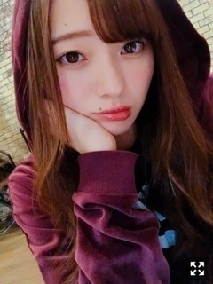
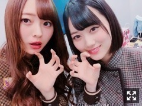
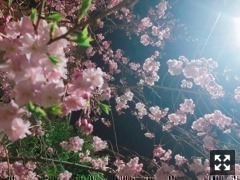

ぶち破ってみちゃう
みなさまこんにちは！！
乃木坂46 ３期生の
梅澤美波です！！

パーカーすき
４６時間テレビ
ありがとうございました！
今回参加した企画たち
１日目
○オープニング
○乃木坂マウンティングpart1
○山下美月電視台
２日目
○３期生テレストレーションゲーム
○富士急中継
○乃木坂46の「の」公開録音
○梅澤美波電視台
○ベストソング延長戦
３日目
○MC
○岩本蓮加電視台
○若様軍団脱出企画
○20thシングル発売記念企画 どの料理show
○松村沙友理さん電視台
○エンディング
こんな感じです！
初めてにも関わらず
たくさんのコーナーに出演させて頂きました！
ありがたいです、、(；；)
MC、やってみたいな〜とは思っていたけど
まさか本当に出来るとは！！
山下と葉月とさせて頂きました！
とても勉強になりました。

４６時間テレビでは
MCコンビでした！
３期生で富士急へ行けたのは
とても楽しくて嬉しかったです！
この機会をくださったことに
本当に感謝です、、
ジェットコースター乗りたかったなあ( .. )（笑）
乃木のの公開録音では
山下と進行役を務めさせて頂きました！
とても楽しかった〜
放送は４／１になります！
ぜひ聴いてみてください！
最強に楽しかったなあ〜
しかも野外！
顔見知りのファンの方もたくさんいて
とても安心したし、
通りすがりの方も見ててくれてたり
２０thシングルから
環境がガラッと変わるし
４期生も募集が始まるから
ないんじゃないかな〜とか
そんなこと考えながらリハーサルから
貴重だなって思って大事にして
本番は涙をこらえるのに必死だった（笑）
ハルジオンを披露出来たことも
こういう風に映像として
ファンの方に届くのは初めてだから
不安も沢山あったけど
披露出来ることは心から嬉しかった
Twitterのトレンドにも入ったと聞いて
本当に嬉しかったです。
見てくださった方、
本当にありがとうございました(；；)
またあったらいいなあ。☺︎
若様軍団での脱出ゲームも
４人で楽しく出来て
若様軍団もっと好きになった( .. )
若月さん大好き( .. )
脱出すごく楽しかったから
またやりたいなー！
電視台には自分のもの以外に
岩本蓮加、山下美月、松村沙友理さんの
電視台に出演させて頂きました！
ミナミンになれたのは
今までで１番恥ずかしかったけど
楽しかったなあ
リハしてる時から
面白くてずっと笑ってた∠( ˙-˙ )／（笑）
そして自分の電視台は
めちゃくちゃ楽しかったなあ〜
一人で大丈夫だったかな
観てる方は面白いかなって不安だったけど
スタジオで西野さんが
やってみたい面白い企画だった
って言ってくださったのが
嬉しくて本当に救いでした(；；)
全部に触れたいけど
長くなるからここら辺で(；；)
初めての４６時間テレビは
想像してたよりたくさんのスタッフさんが
番組のために打ち合わせ段階から
ずーっと準備して下さっていて
動いてくださっていて
疲れてるはずなのに疲れてない？って
私たちを１番に気遣ってくださって
私も頑張らなきゃ！って常に刺激を受けっぱなしでした。
本当にありがとうございました！
とても良い思い出になりました。
２年前の４６時間テレビで発表された
３期生募集がかかったあの日から
私の人生はガラッと変わり、
２年前観ていた側だった私が
今度は出演する側になるっていう
信じられない光景を目の前にして
人生なにがあるか分からないなって
改めて思った３日間でした！
番組に関わっていたスタッフさん、
観てくださっていたファンの皆さま、
本当にお疲れ様でした！

夜桜です。
綺麗ですよね
うまく撮れました☺︎
私は夜桜が好きです
４６時間テレビも終わり
舞台へ気持ちを切り替えています！
残り１０日くらいしかなくて
焦る気持ちもあるけど
素敵な舞台にできるように
残りの稽古期間も頑張ります！
今はすごく壁にぶつかっていて
考えること悩むことも多いけど
色んなことに目を向けながら
頑張っていきます！
私は宇宙飛行士のリンドバーグを
演じさせていただきます。
どんな役柄か、お楽しみに！
それと、
フラゲ日ですね∠( ˙-˙ )／
また発売日迎えたら
皆様のお手元に届くのを
お楽しみに！
ババーっと振り返りになってしまって
ごめんなさい(；；)
また更新します！
またもやパーカー
またねっ！
おやすみなさい〜
とても難しいことだらけで苦戦しています
まだまだ知らないことだらけで、でも今はそんなこと言ってられないから
強気で頑張ります
Original：https://www.nogizaka46.com/s/n46/diary/detail/43943?ima=4955&cd=MEMBER